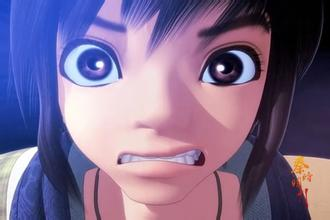

column-count的应用
TV/网络动画《秦时明月》系列是杭州玄机科技信息技术有限公司制作的中国首部3D武侠动画，于2007年春节期间起在中国全国各地正式首映，网络上亦有授权播出。除以武侠为主的正片外，另有衍生出《天行九歌》系列等以玄幻为主的仅在网络、不在电视播出的特别篇等。该系列灵感来源于温世仁原著小说。时代背景从秦始皇兼并六国，建立中国首个帝国开始，到咸阳被楚军攻陷结束，时间跨度30年(包括回忆)，讲述一个体内流淌英雄之血的少年——荆天明，最终成长为盖世英雄，凭一己之力改变历史进程的热血励志故事。剧情并非采用一部一个剧情的系列剧形式，而是连续剧形式。剧情融武侠、奇幻、历史于一体，融入众多中国元素，引领观众亲历两千年前风起云涌、瑰丽多姿的古中国世界，在浓郁的中国风中注入鲜明的时代感。
该动画是一部针对海内外广阔年龄层(官方宣传时一般说"全龄段,但主要针对12岁以上"。新官网首页写的则是“适龄年龄15岁以上”。)市场推出的3D武侠奇幻作品,引领观众亲历两千年前风起云涌、瑰丽多姿的中土世界。故事背景取自秦始皇灭六国到西楚霸王项羽灭秦这段英雄辈出的历史时期,时间跨度约30年,是一部以武侠为主题的全民型动画。各种历史事件和民间传说纷呈迭起,仗剑游走江湖的名士侠隐和对现代中国产生深远影响的诸子百家更是在这个合纵连横的大时代中悉数登场。
百家争鸣的中华古文化在此激烈冲突碰撞,大时代恢宏磅礴的战争场面在连天烽火中震撼重现,江湖儿女的侠骨柔情于动荡乱世间绽放光华……少年天明如杂草般顽强生存于时代变革的乱世之中,面对强暴的政权、险恶的敌人,勇敢地与侠士们进行反抗,经历了一段不俗的遭遇。
观众会切身体会到其成长的心灵历程；此外,豪侠剑客如盖聂、高渐离；神秘隐士如墨家、阴阳家及各门各派的众多高手；纵横捭阖的秦始皇、项羽,这些众所周知的历史人物在出场时有了更具时代感的表现。丰富的人性化场景能吸引观众自然而然融入其中,不同年龄层的观众都可在剧中找到萌点。
box-pack、box-align的应用
